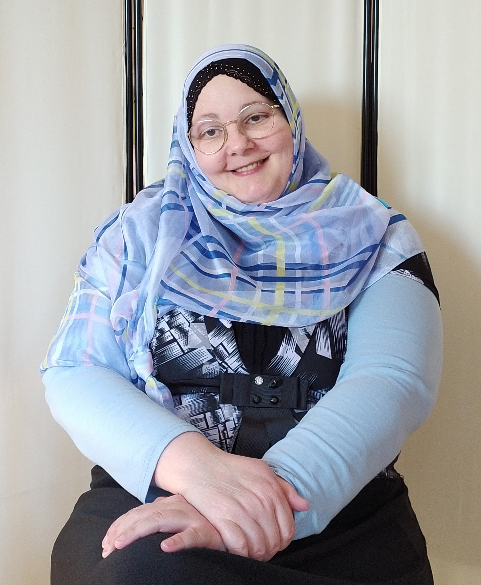

INFO PERSONALI

Nome: Elisabetta
Cognome: Carrara
Data di nascita: 3 Dicembre 1977
Su di me:
80% of success is show up.Woody Allen
Presentazione
Sono una web designer specializzata in WordPress con 10 anni di esperienza e collaboro dal 2018 con il progetto open source ClassicPress. Ho lavorato un anno e mezzo per Automattic, l'azienda dietro a WordPress.com e Tumblr.com.
Formazione
Diploma scientifico linguistico
Conseguito nel 1997 con votazione 42/60 presso l'istituto A. Vallisneri di Lucca
Corso HTML e CSS
Conseguito nel 2007 presso il portale di web learning TRIO della Regione Toscana
Riconosciuto in via ufficiale per crediti formativi.
Competenze
Conoscenze tecniche
Le conoscenze nel mio bagaglio tecnico sono le seguenti:
- HTML
- CSS
- PHP
- WordPress e ClassicPress
Conoscenze operative
- Sviluppo Web
- Dal PSD all'HTML, sviluppo di template per CMS
- Ottimizzazione CSS
- Pulizia di codice inusato, minify e verifica compatibilità